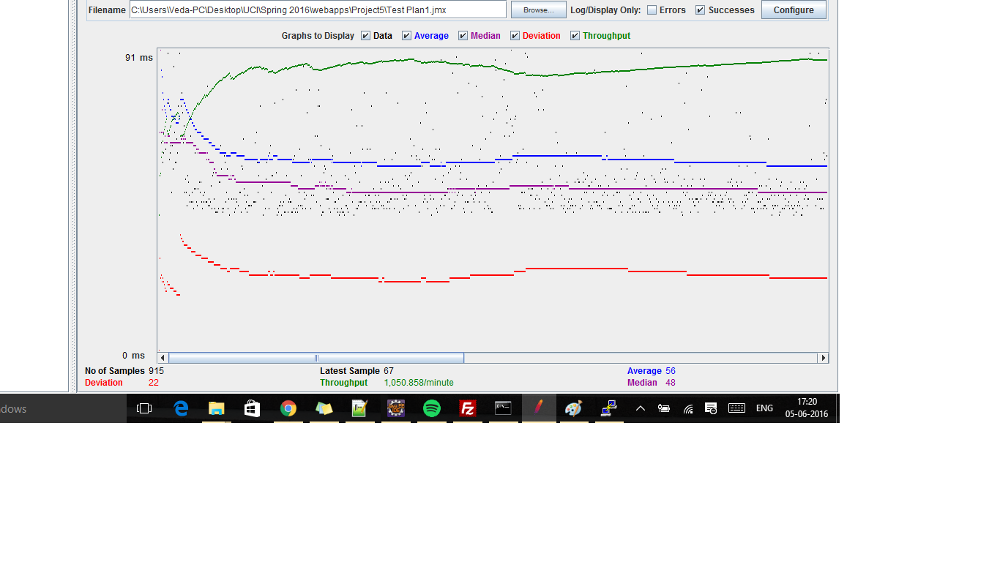
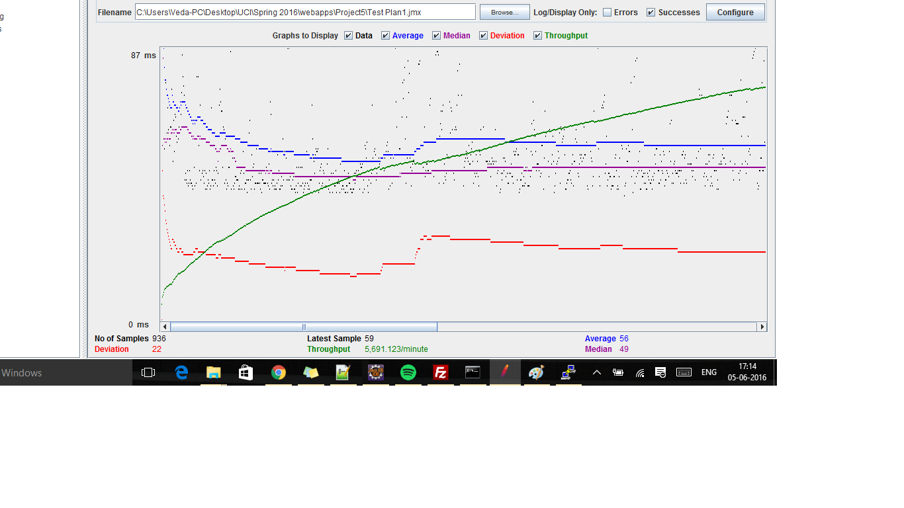
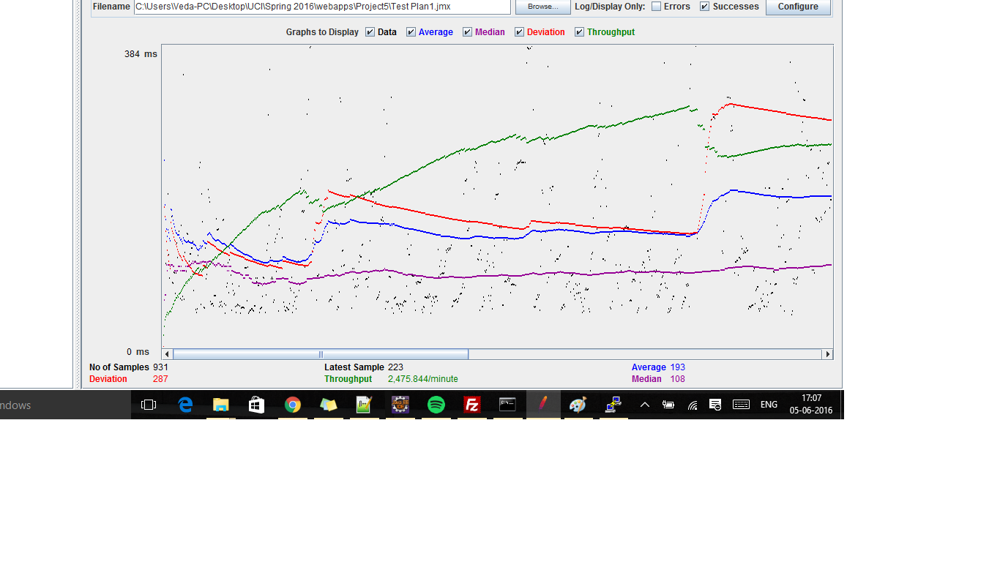
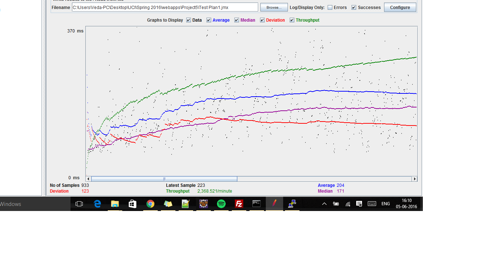
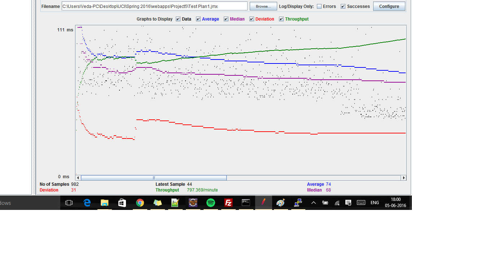
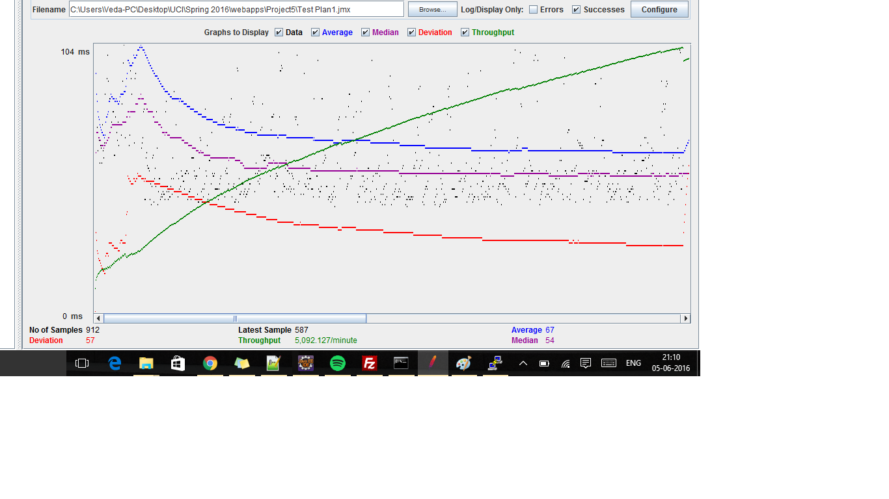
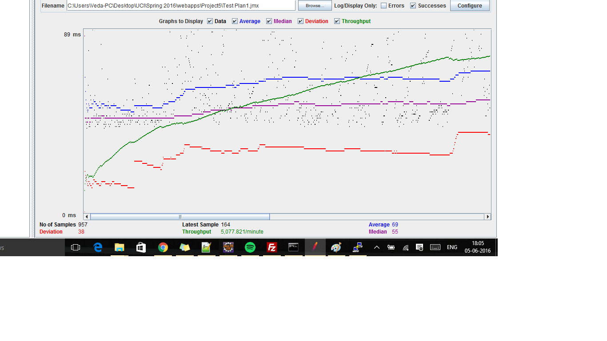
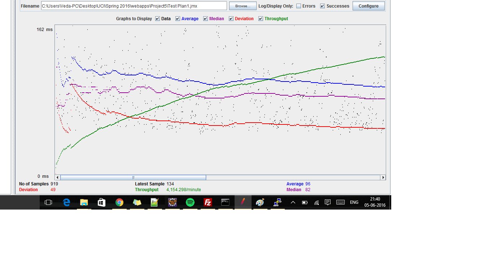

| Single-instance version cases | Graph Results Screenshot | Average Query Time(ms) | Average Search Servlet Time(ms) | Average JDBC Time(ms) | Analysis |
| Case 1: HTTP/1 thread |  | 56 | 2.2 | 0.24 | -- |
| Case 2: HTTP/10 threads |  | 56 | 2.109 | 1.01 | -- |
| Case 3: HTTPS/10 threads |  | 193.5 | 8.32 | 2.29 | -- |
| Case 4: HTTP/10 threads/No prepared statements | 56 | 2.2 | 1.11 | -- | |
| Case 5: HTTP/10 threads/No connection pooling |  | 204 | 92.58 | 12.22 | Query time increases because of no connection pooling |
| Scaled version cases | Graph Results Screenshot | Average Query Time(ms) | Average Search Servlet Time(ms) | Average JDBC Time(ms) | Analysis |
| Case 1: HTTP/1 thread |  | 74 | 22.4 | 3.6 | -- |
| Case 2: HTTP/10 threads |  | 69 | 19.5 | 3.25 | -- |
| Case 3: HTTP/10 threads/No prepared statements |  | 68 | 19.22 | 3.5 | -- |
| Case 4: HTTP/10 threads/No connection pooling |  | 96 | 11.7 | 3 | Query time increases with no connection pooling |